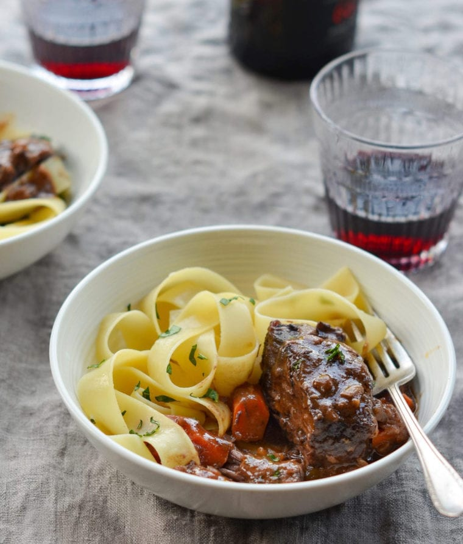

Red Wine Braised Short Ribs
The best tasting and easiest short ribs you will ever make!
Similar in taste to beef bourguignon, red wine braised short ribs are the perfect comfort food dish for the holidays. The beef is fork-tender, the sauce full-bodied — and when you add egg noodles, mashed potatoes or polenta, you have a cozy yet elegant dinner that will warm your bones (and your soul).
4 pounds bonelss short ribs, trimmed of excess fat and silver skin, cut into 3-in chunks
2 teaspoons kosher salt
1/2 teaspoon freshly ground black pepper
2 tablespoons olive oil
2 medium yellow onions, diced
6 cloves garlic, roughly chopped
1-1/2 tablespoons of tomato paste
1/4 cup all-purpose flour
2-1/3 cups red wine
1 cup beef broth
2 teaspoons sugar
1 bay leaf
5 sprigs fresh thyme
2 large carrots, sliced 1/2 in-thick diagonally
Steps
- Adjust an oven rack to the lower-middle position and preheat the oven to 325°F. Season the short ribs all over with salt and pepper. Heat 1 tablespoon of the oil in a large heavy-bottomed Dutch oven or oven-safe pot over medium-high heat until shimmering. Add half of the short ribs and cook, without moving, until well browned on one side only, 3 to 5 minutes. Transfer the beef to a large plate. Repeat with the remaining tablespoon of oil and short ribs. (Note: Browning the beef adds flavor. It might seem odd to brown on one side only but I find that it saves time and does the job just as well.)
- Pour off all but one tablespoon of fat, return the pot to the stove, and reduce the heat to medium-low. Add the onions and cook, stirring occasionally, until soft and translucent, about 5 minutes. (If the onions begin to darken too quickly, add 1 to 2 tablespoons of water to the pan.) Add the garlic and cook, stirring occasionally, 2 minutes more. Add the tomato paste and cook, stirring constantly, for 1 minute. Add the flour and cook, stirring constantly, until fully absorbed by the onion-tomato mixture, about 1 minute.
- Add the wine, broth, sugar, bay leaf and thyme sprigs; increase the heat to high and bring to a boil, scraping the bottom of the pan to loosen browned bits. Add the short ribs and any accumulated juices to the pot and return to a boil. Cover the pot with a lid, transfer to the oven, and cook for 2 hours.
- Carefully remove the pot from the oven. Stir in the carrots. Cover and return the pot to the oven and cook 45 to 60 minutes more, or until the carrots and meat are tender. Remove the bay leaf and thyme sprigs. Skim any grease off the surface of the sauce, if necessary. Taste the sauce and adjust seasoning, if necessary. Spoon the short ribs and sauce into bowls over egg noodles, mashed potatoes, or creamy polenta.